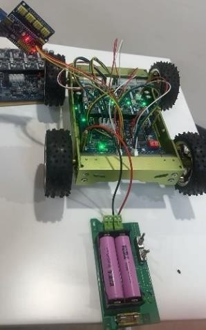
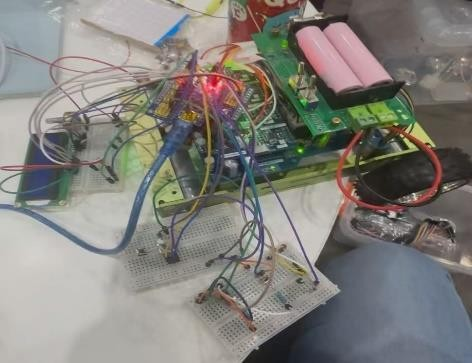

Embedded control
Line-Following Vehicle
An Arduino-based vehicle exploring sensor-guided steering, motor control and human–machine interfaces.
System overview
The vehicle experiments connect sensing, control and actuation. Arduino sketches explore two-sensor and eight-channel infrared inputs, while the second-semester logbook extends the platform with Raspberry Pi and HC-SR04 sensing.
Implementation
The control experiments calculate a steering correction from the sensor error and adjust left and right motor speeds. Separate exercises cover encoder-based motion, I²C and UART communication, LCD output and operator inputs.
Testing and scope
The materials document calibration, motor mismatch, command sequencing and controller trials. They include incomplete and experimental sketches, so no final lap time or competition result is claimed here.
Hardware and control evidence
The vehicle report documents the assembled chassis and HMI integration. The line-following sketches investigate infrared sensing and steering correction; these photographs document the shared vehicle platform, rather than a measured line-following accuracy.

